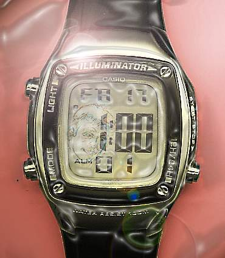

|  |
Exemple d'utilisation de Photoshop
(avec une montre et une photo). Scan de la montre, détourage, rajout d'un
ton chaire, netteté, flou dans les mat, simualtion d'éclairage,
rajout d'un halo, filtre d'embalage plastique, scan et traficage de la
photo, incrustation dans l'image de la montre. Et voilà....par exemple.
|